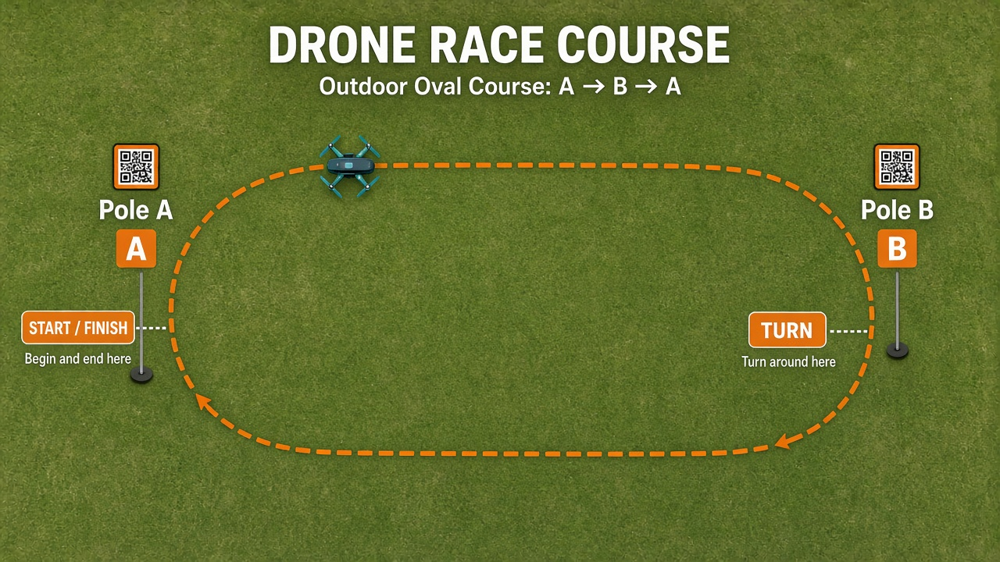
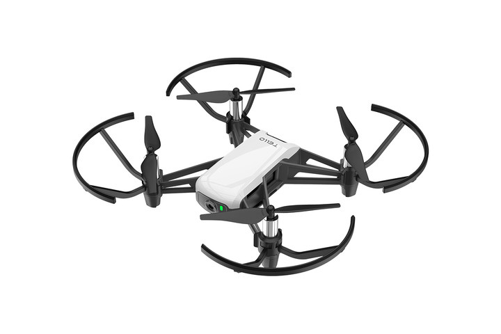
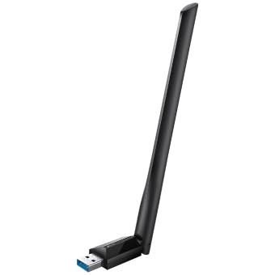
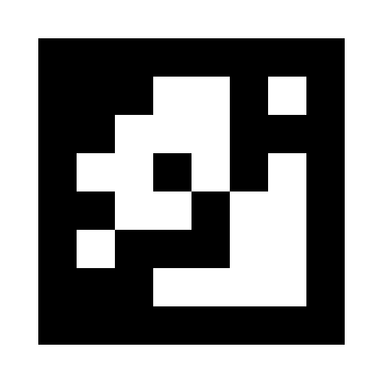
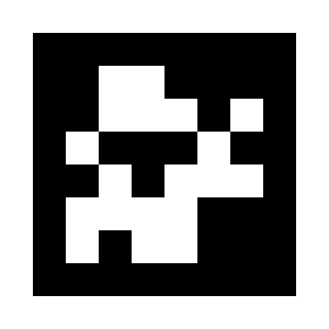
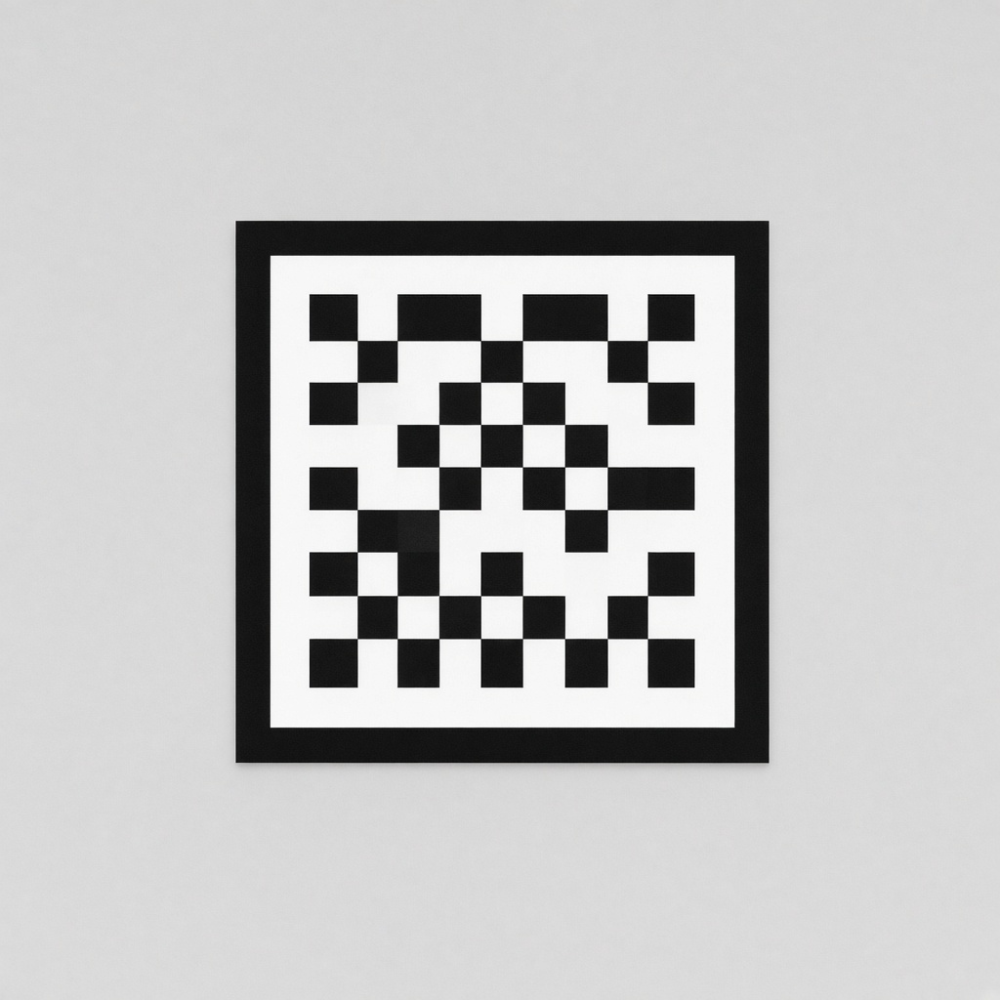

Drone Race Hacks
At Harvard i-labs.
Tellos, dongles, and a public repo to build with. Optional outdoor race track if you want a timed challenge — or invent your own project.
One optional track: two poles, one lap, one Tello in the air.

6 Tello drones Jaime can hand out, plus USB Wi‑Fi dongles.


Dongles let each team’s laptop talk to its Tello without fighting the built-in Wi‑Fi — same path as core/tello_dongle_setup.py.
A black-and-white square sticker a camera can recognize instantly.
tag36h11)


Real tag36h11 textures + illustrative render. See assets/ATTRIBUTION.md.
Harvard i-labs — builders, demos, and room to try ideas.
When you fly the two-pole lap, do it outside — not in a hallway or indoor bay.
Small programmable quad — great for demos, sensing, and short outdoor flights.
USB stick → config/dongles.json → stick-pinned sockets in core/.
core/tello_link.py connects; engine sends SDK + RC. Helpers under tools/.
core/positional.py + mapped tags → position in Pole A frame.
Calibrate with cal_and_map/; store fx in config/camera/.
core/ — link, engine, dongle setup, pose, trackscal_and_map/ — camera calib + AprilTag mappingconfig/ — dongles, tags, map, race courserace/ — lap timer + leaderboard submit helperleaderboard/ — Cloudflare Worker + UI (optional challenge)presentation/ — this deckScan to open the public GitHub repo.
https://github.com/jaromero3rd/drone-race-hacks
Clone, fork, or browse — everyone can get git access from that URL.
The hack is open. The race is one track you can use — not the only deliverable.
One drone in the air at a time on the course. Safety first everywhere.
git clone https://github.com/jaromero3rd/drone-race-hacks.git
cd drone-race-hacks && python3 -m venv .venv && source .venv/bin/activate
pip install -r requirements.txt && pip install -e cal_and_map
Deck: presentation/index.html · Optional leaderboard: leaderboard/README.md